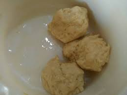
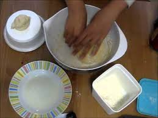
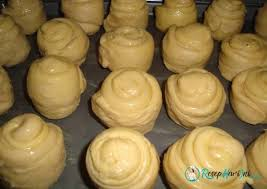

Resep Kue Maryam

Bahan-bahan:
- 250 gr tepung terigu
- 1 butir telur
- 3 sdm margarin, lelehkan
- 100ml air hangat
- 2 sdm susu bubuk(optional)
- 1/2 sdt garam
- margarin leleh untuk olesan
- minyak untuk meredam
Langkah-langkah
- Campurkan semua bahan roti menjadi satu

- Uleni sampai kalis(aku pake tangan)jangan takut jika adonan lengket ya, lumuri tangan sesekali dg tepung(tapi jangan menambahkan tepung)uleni terus sampai adonan kalis

- Kalisnya adonan canai tidak sekalis adonan roti ya, kira-kira seperti ini sudah cukup
